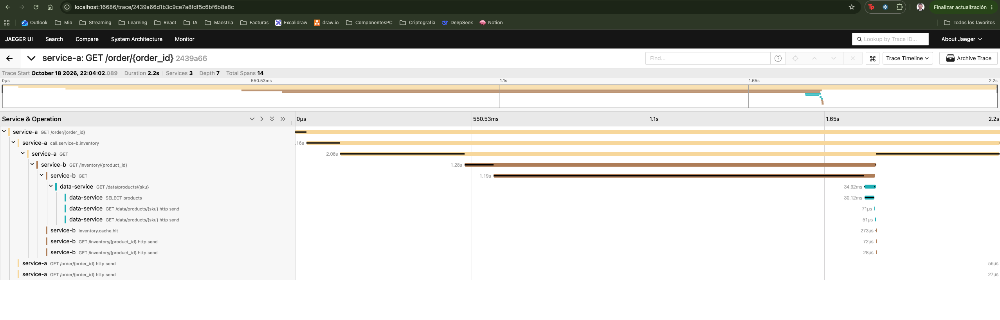
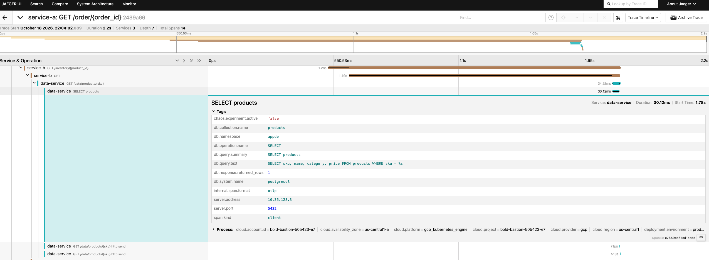
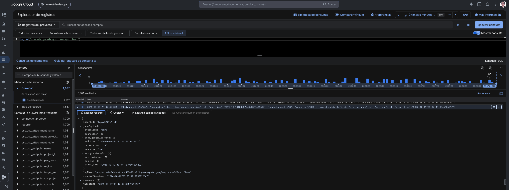

Laboratorio integrador — Observabilidad en Ambientes Productivos
Maestría en Arquitectura de Software
Carlos Braydi
Octubre 2026
Repositorio: https://github.com/invincibleOf/lab-integrador (tag v1.0)
Se construyó un sistema observable de nivel producción sobre Google Cloud (GKE + Cloud SQL) con tres microservicios encadenados
(service-a → service-b → data-service) instrumentados con OpenTelemetry en los tres pilares (trazas, métricas y logs correlacionados por
trace_id). Sobre esa base se implementó detección de anomalías con umbrales dinámicos (baseline + 2σ), una regla de
correlación errores+latencia con enriquecimiento por trace_id, observabilidad de red (VPC Flow Logs, Dataplane V2/eBPF) y
seguridad (escaneo de CVEs), y se validó la resiliencia con experimentos de caos controlados midiendo el MTTD y el consumo de error budget.
| Resultado clave | Valor |
|---|---|
| Servicios instrumentados con OTel (3 pilares) | 3 de 3, traza única de 3 saltos |
| MTTD experimento 1 (latencia 200 ms en service-b) | {{EXP1_MTTD}} |
| MTTD experimento 2 (error 10% en data-service) | {{EXP2_MTTD}} |
| MTTD regla correlacionada (errores + latencia) | {{EXP3_MTTD}} |
| Notificaciones de page (estático → AIOps) | {{NOISE}} |
| Madurez promedio autoevaluada (escala 1–5) | 2,9 → objetivo 3,8 en 3 meses |
Decisión de alcance: la solución se desplegó en una sola nube (GCP). Se priorizó la profundidad (AIOps, caos medido, SLOs) sobre duplicar la infraestructura en AWS, por costo y por la recomendación de ejecutar en un sandbox aislado. La extensión a AWS (RDS, ECS Service Connect, Security Hub) y el service mesh quedan como primeras iniciativas del roadmap (sección 9).
Cliente / k6 (2 req/s)
│ HTTP (LoadBalancer)
▼
┌─────────────┐ W3C traceparent ┌─────────────┐ W3C traceparent ┌──────────────┐
│ service-a │ ────────────────▶ │ service-b │ ────────────────▶ │ data-service │
│ FastAPI │ │ FastAPI │ │ FastAPI │
│ /order │ │ /inventory │ │ /data/... │
└──────┬──────┘ └──────┬──────┘ └──────┬───────┘
│ SQL (IP privada) │ SQL │ SQL (spans semconv DB)
└─────────────────────────────────┴─────────────────────────────────┴──▶ Cloud SQL PostgreSQL 16
│ OTLP gRPC (trazas + métricas) (Query Insights)
▼
┌──────────────────────────── OTel Collector (DaemonSet) ────────────────────────────┐
│ memory_limiter → resource → resourcedetection(gcp) → filter/health → batch │
└───────┬───────────────────────────────┬────────────────────────────────────────────┘
▼ ▼
Jaeger (trazas) Prometheus (métricas + reglas SLI / AIOps / estáticas)
│ alertas → orquestador (MTTD + trace_id desde Jaeger)
Red: VPC con Flow Logs (5 s, 100%) · GKE Dataplane V2 (eBPF) · Cloud SQL por Private Service Access
Caos: Chaos Mesh (NetworkChaos) + inyección de errores controlada · Imágenes: Artifact Registry (escaneo CVE)
| Capa | Componente | Decisión y justificación |
|---|---|---|
| IaC | Terraform (terraform/gcp) | Única fuente de verdad: VPC, GKE, Cloud SQL, Artifact Registry y APIs. Los scripts solo despliegan cargas dentro del clúster. |
| Cómputo | GKE zonal, 2 × e2-standard-4 | Un tercio de los nodos de un clúster regional y sin fee de administración: suficiente para un sandbox. |
| Datos | Cloud SQL PostgreSQL 16 (db-f1-micro), IP privada | Base administrada sin exposición a internet y sin Auth Proxy; Query Insights complementa los spans de DB. |
| Red | Dataplane V2 + VPC Flow Logs | eBPF habilita logging de NetworkPolicy; Flow Logs dan visibilidad N-S/E-W. |
| Build | Cloud Build → Artifact Registry | Build amd64 nativo, sin subir imágenes desde el portátil; escaneo de CVEs automático. |
| Telemetría | OTel SDK + Collector contrib 0.103 | Vendor-neutral; el Collector desacopla las apps de los backends. |
FastAPIInstrumentor.instrument_app (span servidor por request), HTTPXClientInstrumentor (propagación W3C
entre servicios) y spans de negocio. Resultado: una sola traza atraviesa los tres servicios.http.server.request.duration con http.response.status_code) habilitada con
OTEL_SEMCONV_STABILITY_OPT_IN=http; son la base de los SLIs. Además db.client.operation.duration en data-service.trace_id y span_id inyectados por un formatter, lo que permite saltar de un log a la traza.
Traza real verificada (extracto de la API de Jaeger):
[service-a] GET /order/{order_id} 189.3ms
[service-a] fetch.order.db 30.7ms
[service-a] SELECT 4.2ms
[service-a] call.service-b.inventory 156.9ms
[service-a] GET 88.8ms
[service-b] GET /inventory/{product_id} 81.6ms
[service-b] GET 39.7ms
[data-service] GET /data/products/{sku} 30.7ms
[data-service] SELECT products 28.1ms
[service-b] inventory.cache.hit 0.4ms
db.system.name = postgresql db.namespace = appdb db.collection.name = products db.operation.name = SELECT db.query.summary = SELECT products (nombre del span) db.query.text = SELECT sku, name, category, price FROM products WHERE sku = %s server.address = 10.35.128.3 (IP privada de Cloud SQL) server.port = 5432 db.response.returned_rows = 1
La query se registra parametrizada (%s), por lo que nunca contiene datos del usuario. Se descartó
Psycopg2Instrumentor en data-service porque emite los atributos legacy (db.statement, db.name) y duplicaba el span.

SELECT products.No se implementó en esta entrega. En una sola nube el mesh no cambia la cobertura de los requisitos, y su integración con Chaos Mesh (sidecars Istio + inyección tc) añadía riesgo. La visibilidad L7 entre servicios se obtiene hoy de las trazas OTel (grafo de dependencias de Jaeger). Se incluye en el roadmap (Cloud Service Mesh, mes 2).
svc:error_ratio:rate1m = 5xx / total por servicio (ventana 1m) svc:error_ratio:baseline_avg30m = avg_over_time(svc:error_ratio:rate1m[30m]) svc:error_ratio:baseline_stddev30m = stddev_over_time(svc:error_ratio:rate1m[30m]) ALERT ErrorRateAnomaly2Sigma svc:error_ratio:rate1m > baseline_avg30m + 2 * baseline_stddev30m and svc:error_ratio:rate1m > 0.01 # piso: evita alertar cuando el baseline ≈ 0 for: 30s
ALERT AIOpsCorrelatedAnomaly (error_rate > baseline + 2σ and error_rate > 1%) and on (exported_job) latency_p99 > 0.5s (SLO) for: 30s → severity=critical, page=true
Enriquecimiento con trace_id: una métrica agregada no contiene el trace_id. Cuando la alerta pasa a FIRING, el orquestador
(scripts/run_chaos.py) consulta la API de Jaeger por la traza más reciente con error=true del servicio afectado y adjunta su
trace_id a la alerta. Así quien responde pasa de "subió el error rate" a la traza exacta del request fallido.
Durante toda la corrida (warm-up + 3 experimentos, misma carga) se evaluaron en paralelo reglas estáticas clásicas
(error_rate > 0, p99 > 200 ms) y las reglas dinámicas/correlacionadas. Se contaron los episodios (transiciones a FIRING):
| Señal | Implementación | Uso |
|---|---|---|
| Tráfico N-S / E-W | VPC Flow Logs en la subred (intervalo 5 s, muestreo 100%, metadata completa) | Quién habla con quién (pods, nodos, Cloud SQL), bytes y paquetes; base para alertas de tráfico anómalo vía métricas basadas en logs. |
| Política de red eBPF | GKE Dataplane V2 (Cilium) | Permite NetworkPolicy con logging de conexiones denegadas (señal E-W de intentos no autorizados). |
| CVEs activos | Artifact Registry + Container Scanning API | Cada imagen se escanea al publicarse; las vulnerabilidades por severidad se consultan en la consola. |
| Superficie de datos | Cloud SQL sin IP pública (Private Service Access) | La base no es alcanzable desde internet; todo el tráfico SQL es interno y queda en Flow Logs. |

Limitación: el proyecto pertenece a una cuenta personal sin organización de GCP, por lo que Security Command Center no está disponible con su funcionalidad completa. Quedan pendientes el dashboard consolidado de "Golden Signals de Seguridad" y la alerta automática de tráfico anómalo (métrica basada en logs sobre Flow Logs + NetworkPolicy deny). Ambos están en el roadmap (mes 1).
SLOs: disponibilidad del borde (service-a) 99,5% en 30 días; latencia p99 < 500 ms (baseline medido ≈ 400 ms). Con 2 req/s el error budget mensual es
0,5% × 2 × 86.400 × 30 = 25.920 requests fallidos. Carga constante de 2 req/s con k6 (k6/carga-constante.js) y sandbox
dedicado (namespace otel-lab en un clúster propio).
| Experimento | Fault | Alerta | MTTD | ¿SLO degradado? | Error budget | ¿Accionable? |
|---|---|---|---|---|---|---|
| 1. Latencia | Chaos Mesh NetworkChaos +200 ms en service-b (tc netem) | LatencySLOBreach | {{EXP1_MTTD}} | latencia: sí (p99 > 500 ms, disparó LatencySLOBreach); disponibilidad: no | 0% (sin 5xx; solo latencia) | Sí: identifica el servicio (exported_job) y la traza lenta. |
| 2. Errores | 10% de respuestas 500 en data-service | ErrorRateAnomaly2Sigma | {{EXP2_MTTD}} | {{EXP2_SLO}} | {{EXP2_BUDGET}} | Sí: trae el trace_id del request fallido. |
| 3. Combinado | 1 + 2 simultáneos | AIOpsCorrelatedAnomaly | {{EXP3_MTTD}} | {{EXP3_SLO}} | {{EXP3_BUDGET}} | Parcial: no hubo page correlacionado; el incidente se detectó solo por LatencySLOBreach (ver análisis). |
Log completo del orquestador en docs/evidencias/chaos/resultados-exp1.txt y resultados-exp23.txt.
Análisis del experimento 3 (la alerta correlacionada no se disparó): con ambos faults activos el p99 del borde subió a ~2,5 s y hubo
64 respuestas 5xx, pero AIOpsCorrelatedAnomaly no pasó a FIRING. Causa: el baseline de 30 min incluía los errores del experimento 2, lo que
elevó la media y la desviación estándar; el umbral baseline + 2σ quedó por encima del error rate del experimento 3 (contaminación del baseline).
Sí alertó LatencySLOBreach (SLO de latencia violado), por lo que el incidente no pasó desapercibido. Mitigaciones: (1) excluir del baseline
las ventanas con caos o incidentes (etiqueta de mantenimiento), (2) baseline más largo (24 h–7 d) con estacionalidad, (3) espaciar experimentos ≥ la
ventana del baseline, (4) combinar 2σ con un umbral absoluto ligado al burn rate del SLO.
Nota metodológica: el MTTD se mide desde el instante en que se envía el fault (T0) hasta que Prometheus marca la alerta FIRING; incluye
la ventana de rate (1 m), la evaluación (15 s) y el for: 30s. En el experimento 2 el T0 incluye el rollout de los pods, por lo que el valor es
conservador. Se usó inyección controlada por variable de entorno porque HTTPChaos de Chaos Mesh no admite un porcentaje de requests (abortaría el 100%).
| Problema | Causa raíz | Corrección |
|---|---|---|
| Trazas fragmentadas: cada servicio iniciaba su propia traza | FastAPIInstrumentor().instrument() parchea fastapi.FastAPI, pero from fastapi import FastAPI ya había capturado la clase original → sin span servidor ni extracción de traceparent. | FastAPIInstrumentor.instrument_app(app) explícito. |
| El fix no "se aplicaba" | Tag reutilizado (1.0.0) + imagePullPolicy: IfNotPresent → el nodo usaba la imagen en caché. | imagePullPolicy: Always (en producción: tags inmutables por commit). |
| Collector en CrashLoopBackOff | Detector k8s_node inexistente en resourcedetection. | Detectores [env, gcp]. |
| Prometheus sin reglas | rule_files apuntaba a una ruta distinta al montaje del ConfigMap. | Ruta corregida; validación con /api/v1/rules. |
| Primera corrida de caos inválida: p99 base de 4,7 s y alerta de latencia activa antes del fault | Saturación de Cloud SQL db-f1-micro (núcleo compartido, ~25 conexiones) con una conexión nueva por request × 3 servicios a 10 req/s; el HPA escaló service-a a 10 pods. | Carga a 2 req/s y SLO p99 500 ms basado en el baseline medido. Roadmap: pool de conexiones y tier de DB dedicado. Se conservó la corrida fallida como evidencia (corrida1-saturada-10rps.txt). |
| Alerta correlacionada no disparó en el experimento 3 | Baseline de 30 min contaminado por el experimento previo (media y σ infladas). | Excluir ventanas de caos del baseline; baseline largo; umbral de burn rate como piso. |
| Degradación silenciosa | service-a respondía 200 cuando fallaba service-b → el SLI nunca veía el error. | Propagar 502; el SLO del borde refleja el fallo. |
| Binding de Workload Identity fallaba | El pool <proyecto>.svc.id.goog lo crea GKE; Terraform no veía la dependencia. | depends_on explícito. |
Escala: 1 inicial · 2 repetible · 3 definido · 4 gestionado/medido · 5 optimizado/autónomo.
| # | Dominio | Nivel | Evidencia | Brecha principal |
|---|---|---|---|---|
| 1 | Tres pilares (métricas, logs, trazas) | 4 | Los 3 pilares en los 3 servicios, logs con trace_id | Logs aún no centralizados en un backend consultable junto a trazas (Loki/Cloud Logging + links) |
| 2 | Instrumentación OpenTelemetry | 4 | SDK + auto-instrumentación, semconv HTTP y DB estables, Collector | Dependencias sin fijar; sin exemplars |
| 3 | Correlación y contexto | 3 | trace_id en logs y en alertas enriquecidas | Exemplars métricas→trazas; enriquecimiento como servicio (webhook) y no script |
| 4 | AIOps y alertamiento | 3 | Baseline+2σ, correlación, comparación de ruido medida | Sin Alertmanager/ruteo ni deduplicación; baseline de 30 min |
| 5 | Observabilidad de red | 2 | Flow Logs, Dataplane V2 | Sin alertas de tráfico anómalo ni mapa E-W; sin service mesh |
| 6 | Observabilidad de seguridad | 2 | Escaneo CVE, DB privada | Sin SCC, sin dashboard de golden signals de seguridad |
| 7 | DataOps de telemetría | 2 | Batch, memory_limiter, filtro de /health | Sin tail sampling, sin control de cardinalidad ni costo de ingestión |
| 8 | SRE: SLOs, error budget, resiliencia | 3 | SLOs definidos, caos con MTTD medido, budget calculado | Burn-rate multi-ventana, game days periódicos, runbooks |
| Promedio | 2,9 | |||
| Mes | Iniciativa | Dominios | Métrica de éxito |
|---|---|---|---|
| 1 | Alertmanager + webhook alert-enricher (trace_id en Slack/Chat) y alertas de burn-rate multi-ventana (1h/5m, 6h/30m) | 3, 4, 8 | 100% de alertas page con trace_id y runbook; MTTD ≤ 60 s |
Golden Signals de Seguridad en Grafana: auth fallidas (auth_failures_total), Flow Logs N-S/E-W, CVEs críticos | 5, 6 | Dashboard en uso; alerta de NetworkPolicy deny con MTTD < 2 min | |
| Fijar versiones de dependencias y tags inmutables por commit en CI | 2 | 0 builds no reproducibles | |
| 2 | Cloud Service Mesh (métricas L7 E-W, mTLS) y fault injection nativa del mesh | 5, 6, 8 | Grafo L7 completo; mTLS 100% intra-clúster |
| Extensión a AWS: data-service sobre RDS, ECS + Service Connect, Security Hub, CloudWatch Anomaly Detection | 1, 4, 6 | Paridad de señales en ambas nubes | |
| 3 | Tail sampling en Collector gateway (100% errores/lentas, 10% resto) y presupuesto de cardinalidad | 7 | −50% volumen de trazas sin perder trazas de error |
| Game days mensuales automatizados (Chaos Mesh Schedule) con postmortem blameless | 8 | MTTD y MTTR medidos y con tendencia a la baja |
cd terraform/gcp && terraform init && terraform apply # infraestructura (~15 min) ./scripts/deploy.sh images && ./scripts/deploy.sh app && ./scripts/deploy.sh chaos-mesh k6 run -e HOST=<IP> k6/carga-constante.js & python3 scripts/run_chaos.py # experimentos + MTTD + ruido terraform destroy # limpieza del sandbox